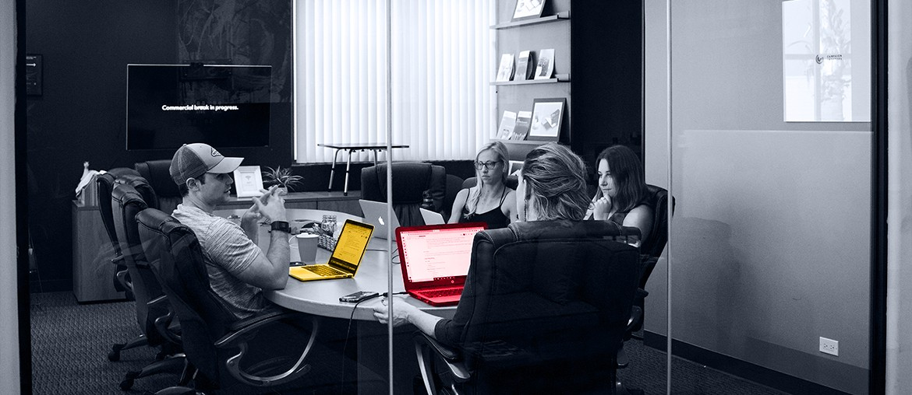

Scoped end-to-end project
We would run an eight-week project with one OeKB sponsor and weekly demos. Elinext would own delivery, QA, and handover.
Angular
Java
.NET
Node.js
Hero
my.oekb now carries more export and capital-market work than a simple access layer. That makes delivery quality, document control, and vendor reliability much more visible.
You are hiring for ICT procurement and third-party risk. That usually means DORA work is moving from policy into daily platform operations.
Our Read
Our read is simple. OeKB is still consolidating services across my.oekb and the Login Portal. At the same time, the platform is getting deeper workflows like secure uploads and online change requests. The hiring signal tells us supplier control is now a live delivery issue. If those controls stay split or manual, releases slow down, evidence gets messy, and service owners carry too much operational risk.
What We’d Do
We would run an eight-week project with one OeKB sponsor and weekly demos. Elinext would own delivery, QA, and handover.
Trace supplier onboarding, offboarding, evidence, and ownership across my.oekb, the Login Portal, and shared capital-market services.
Design one review route for procurement, security, and service owners with clear DORA checkpoints and fewer manual handoffs.
Add secure upload, approval, and exception handling for change requests, BC tests, exit plans, and supplier remediation items.
Release one production-ready flow with QA, audit-ready reports, and a simple handover plan for OeKB teams.
Who Is Elinext
Elinext is a full-cycle software development company, active since 1997, with about 700 in-house specialists and no freelancers. For a regulated platform like my.oekb, the fit is our mix of enterprise web delivery, QA, and security-minded process work. We work under ISO 27001 and ISO 9001, and our teams have delivered for large companies like Siemens, Broadcom, Volkswagen, TUI, and TRUMPF. We can own a fixed workstream end to end and still work closely with your internal sponsors. That makes the plan above realistic, not abstract.
Proof
Two examples are close to OeKB’s reality: risk-heavy finance software and operational dashboards for securities work.
Elinext supported a risk-focused finance product for eleven years with a dedicated development and testing team.
The product later changed hands to a larger transnational corporation, which is a strong signal of sustained business value.
View case study
For a global fintech client, Elinext built dashboard features to help users navigate data, filters, and actions faster.
The case also notes that releases and upgrades were ready on time because Elinext worked closely with the product team.
View case studyStart The Conversation
If this reads close to the work already on your table, we can scope the first eight weeks in one call.